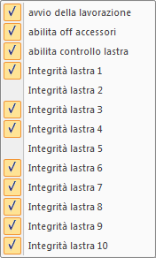

Il batch è una lista di lavorazioni da eseguire in sequenza.
Il programma invia al CN il file contenente la lavorazione e i parametri ad essa associati; comanda l’avvio della lavorazione e ne attende il completamento.
I dati associati ad ogni lavorazione sono inviati al CN prima di iniziare la lavorazione.
Una eventuale condizione di allarme rilevata dal CN interrompe il batch.
Creare una lista di lavorazioni
Per aggiunge una nuova lavorazione alla lista:
- Fare clic sul pulsante .
- Nella finestra “Apri”, indicare nella casella Nome file il nome del file da aggiungere alla lista; il file deve avere estensione “cnc” come indicato nella casella Tipo file.
- Scegliere il pulsante Apri.
Note:
- la lavorazione viene aggiunta sempre dopo la riga selezionata e assume i parametri della lavorazione che la precede,se esiste;
- la lista può contenere un numero indefinito di righe;
- fare clic sul pulsante per aggiungere una lavorazione senza copiare i parametri della riga che precede.
Selezionare una lavorazione
La selezione di una lavorazione è necessaria per indicare al programma quale lavorazione deve essere modificata.
Nella lista, fare clic sulla riga che contiene la lavorazione da modificare; la riga viene mostrata in azzurro per indicare che è selezionata.
Per selezionare contemporaneamente più righe, mantenere premuto il tasto [Ctrl].
Cancellare una lavorazione
- Selezionare la lavorazione.
- Fare clic sul pulsante .
Nota: la cancellazione di una riga che contiene un file batch, implica la cancellazione di tutte le lavorazioni associate.
Cambiare l’ordine delle lavorazioni
- Selezionare la lavorazione da spostare.
- Fare clic sul pulsante oppure per modificare l’ordine di esecuzione delle lavorazioni.
Nota: una riga che contiene un file batch non può essere spostata.
Salvare una lista di lavorazioni
Nella barra degli strumenti
- Fare clic sul pulsante .
- Nella finestra “Salva”, indicare nella casella Nome file il nome del file; il file deve avere estensione “btc” come indicato nella casella Tipo file.
- Scegliere il pulsante Salva.
Aprire una lista di lavorazioni
Nella barra degli strumenti
- Fare clic sul pulsante .
- Nella finestra “Apri”, indicare nella casella Nome file il nome del file da leggere; il file deve avere estensione “btc” come indicato nella casella Tipo file.
- Scegliere il pulsante Apri.
Aggiungere alla lista un file batch esistente
Per aggiunge alla lista un file batch esistente:
- Fare clic sul pulsante .
- Nella finestra “Apri”, indicare nella casella Nome file il nome del file batch da aggiungere alla lista; il file deve avere estensione “btc” come indicato nella casella Tipo file.
- Scegliere il pulsante Apri.
Le lavorazioni contenute nel file batch sono aggiunte sempre in coda alla lista.
Nota:
- Un file batch presente nella lista può essere compresso (tutte le righe sono nascoste) o espanso (tutte le righe sono visibili) con doppio clic sul nome del file.
- La riga che contiene un file batch può essere modificata solo nella colonna “ON” e nella colonna “Nrx”.
- Non è possibile aggiungere alla lista un file batch contenente altri file batch.
Modificare il nome della lavorazione
- Selezionare la lavorazione.
- Fare clic sul pulsante .
- Nella finestra “Apri”, indicare nella casella Nome file il nome del file; il file deve avere estensione “cnc” come indicato nella casella Tipo file.
- Scegliere il pulsante Apri.
Espandere una lavorazione
Per suddividere una lavorazione per utensile usato.
- Selezionare la lavorazione.
- Fare clic sul pulsante .
Il file della lavorazione deve includere più lavorazioni eseguite con utensili diversi.
Nella espansione del file vengono replicati tutti i parametri associati al file da espandere.
Modificare la posizione iniziale XY
La posizione iniziale indica il punto del piano di lavoro XY che corrisponde al punto di coordinate X = 0, Y = 0 della lavorazione.
- Selezionare la lavorazione.
- Fare doppio clic sulla colonna “X”; inserire il valore numerico in millimetri della posizione iniziale assoluta per l’asse X.
- Confermare con “INVIO”.
- Ripetere per l’asse Y.
Nota:
- Se i valori di posizione iniziale sono entrambi nulli, la lavorazione sarà eseguita nella posizione iniziale impostata dalla lavorazione precedente.
- Se alla lavorazione è associato un indice di allineamento lastra, la posizione iniziale dipenderà dai dati di allineamento.
Modificare la posizione iniziale XY da “altre posizioni iniziali”
Per assegnare la posizione iniziale XY scegliendo dalla tabella delle “altre posizioni iniziali”:
- Selezionare la lavorazione.
- Fare clic sul pulsante .
- Fare doppio clic sulla riga desiderata nella lista proposta.
Aggiungere uno spostamento Y
Lo spostamento aggiuntivo Y indica una variazione della posizione iniziale Y. Si usa quando sullo stesso materiale vengono eseguite lavorazioni distinte.
- Selezionare la lavorazione.
- Fare doppio clic sulla colonna “dY”; inserire il valore numerico in millimetri dello spostamento aggiuntivo Y.
- Confermare con “INVIO”.
Modificare lo spessore del materiale H
Lo spessore del materiale H indica una variazione della posizione iniziale Z.
Durante la lavorazione, questo valore viene sommato al valore di preset dell’utensile in uso per determinare la nuova posizione Z = 0 della lavorazione.
- Selezionare la lavorazione.
- Fare doppio clic sulla colonna “H”; inserire il valore numerico in millimetri dello spessore del materiale H.
- Confermare con “INVIO”.
Nota:
- Se il valore dello spessore del materiale H è nullo, la lavorazione sarà eseguita con lo spessore impostata dalla lavorazione precedente.
- Se alla lavorazione è associato un indice di allineamento lastra,lo spessore del materiale H dipenderà dai dati di allineamento.
- Se il valore dello spessore del materiale H non è nullo, lo spessore calcolato dall’allineamento lastra non viene usato.
Ripetere la lavorazione
Per ripetere una lavorazione è necessario indicare il numero di ripetizioni lungo X e lungo Y e la relativa distanza.
- Selezionare la lavorazione.
- Fare doppio clic sulla colonna “Xnr”; inserire il numero delle ripetizioni lungo X. Confermare con “INVIO”.
- Fare doppio clic sulla colonna “Xdr”; inserire la distanza in millimetri tra una ripetizione e la successiva lungo X. Confermare con “INVIO”.
- Fare doppio clic sulla colonna “Ynr”; inserire il numero delle ripetizioni lungo Y. Confermare con “INVIO”.
- Fare doppio clic sulla colonna “Ydr”; inserire la distanza in millimetri tra una ripetizione e la successiva lungo Y. Confermare con “INVIO”.
Nota: i parametri delle ripetizioni vengono annullati dopo l’esecuzione di ogni lavorazione.
Riprendere la lavorazione da una ripetizione diversa dalla prima
- Selezionare la lavorazione.
- Fare doppio clic sulla colonna “Nrp1”; inserire il numero della prima ripetizione. Confermare con “INVIO”.
Allineamento della lastra
Il CN è in grado di eseguire il rilevamento della posizione di una lastra nel piano XY e dello spessore del materiale H.
I dati di allineamento relativi ad un massimo di tre lastre sono mantenuti nel CN fino al suo spegnimento.
Per associare una lavorazione ai dati di allineamento della lastra, è necessario indicare il numero della lastra; la posizione iniziale XY e lo spessore del materiale H vengono modificati secondo i dati di allineamento.
- Selezionare la lavorazione.
- Fare doppio clic sulla colonna “Nlas”; inserire il numero della lastra. Confermare con “INVIO”.
Nota: se alla lavorazione è associato un indice di allineamento lastra, la posizione iniziale e lo spessore del materiale H dipenderanno dai dati di allineamento.
Modifica dello spessore H calcolato dall’allineamento lastra
Modifica il valore dello spessore del materiale H calcolato dall’allineamento lastra.
Nel caso sia stato indicato un valore nella colonna H, questo parametro viene ignorato.
Per modificare la variazione dello spessore:
- Selezionare la lavorazione.
- Fare doppio clic sulla colonna “dH”; inserire il valore numerico in millimetri di correzione. Confermare con “INVIO”.
Sospendere una lavorazione
Sospendere una lavorazione permette di annullare la lavorazione senza eliminarla dalla lista.
Per sospendere una lavorazione:
- Selezionare la lavorazione.
- Fare doppio clic sulla colonna “ON”; compare la scritta “off” per indicare che la lavorazione è sospesa.
Eseguire un batch
Completata la lista, per avviare le lavorazioni fare clic sul pulsante .
Nella lista, viene espansa ogni eventuale lavorazione batch e viene azzerata la colonna “time”.
Al termine di ogni lavorazione, il valore “time” mostra il tempo impiegato.
Opzioni di esecuzione del batch

Fare clic sul pulsante per abilitare le seguenti opzioni:
- avvio della lavorazione: la spunta indica che all’avvio del batch viene avviata anche la prima lavorazione; diversamente, il CN attende lo start dall’operatore.
- Abilita off accessori: la spunta indica che è richiesto lo spegnimento di tutti gli accessori al completamento del batch.
- Abilita il controllo lastra: la spunta indica che è richiesto il controllo lastra.
- Integrità lastra 1-10: la spunta indica che le rispettive lastre sono considerate integre.
Interrompere un batch
Fare clic sul pulsante per interrompere l’esecuzione del batch. Una lavorazione in corso viene completata.
L’esecuzione di un batch viene interrotta da ogni condizione di allarme.